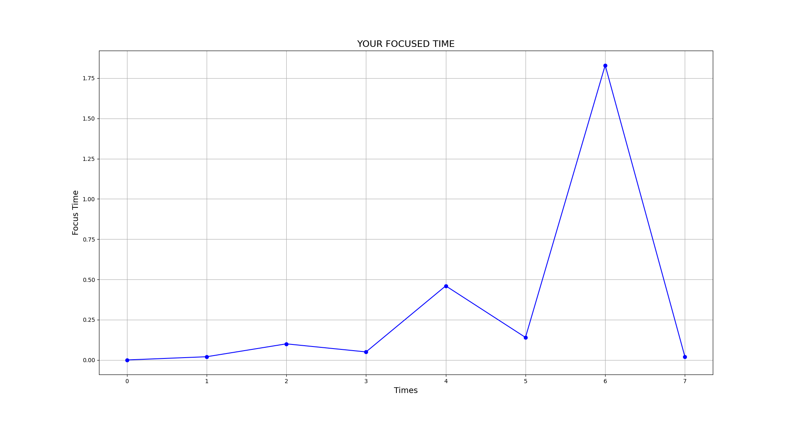

Hello every one . I am Shlok . Studying 9 th class in kendriya vidyalaya.
My self Shlok Are a student a programmer wishing to become a software
developer . Software of a computer is my passion . #Developer_life
My Insta id:
hacker_shlok7
Please Subsribe My Youtube Channel
Shlok Are
Hello, everyone I am Shlok of class 9th. Today on this blog I am explaining About my project 'SHLOKA Ai Assistant'. It is an A.i. which is developed using "Python Programming Language".
Python : Python is a high-level, interpreted, general-purpose programming language. Its design philosophy emphasizes code readability with the use of significant indentation.
Python is dynamically-typed and garbage-collected
I hope that you heard about Alexa Sire Google_Assistant Cortana. They are Ai assistants. Similarly, SHLOKA is also an ai assistant the word SHLOKA is not a name or word it is an abbreviation. b>SHLOKA:
Scientific Honest Loyal Obeyed Kind Assistance
I aim 'to make AI common and relatable in our life, especially in the Indian middle-class
family'. Although it is not having intelligence but it can do many things.
So I am Instroducing to features of SHLOKA .
When we try to focus on a topic we often get distarcted due to social media. For some time we need to concentrate on a topic. In this case SHLOKA can help you have to say "SHLOKA turn on focus mode". When we turn on this features we can't access the websites that disturb us but another websites can be accesed . After that time that websites automatically accessed. And it will also show a graph to us "howw much time we focued". You have to just say ("SHLOKA SHOW MY FOCUS GRAPH") Shloka will analyse your data and draw a graph like this :

Imagine yourself in a village of Tamil Nadu and ther you want Ask a adress he dont know English he knows only Tamil and you don't know Tamil.
So, in problem SHLOKA can help. You have to just give a small command "translate English to Tamil". After this SHLOKA will ask the line you want to translate. So now you can easily het you your adress.

Automation:Automation describes a wide range of technologies that reduce human intervention in processes.
Human intervention is reduced by predetermining decision criteria, subprocess relationships, and related actions — and embodying those predeterminations in machines.
Using SHLOKA we can controll a smart light or any smart application.
Iot:The Internet of things describes physical objects with sensors, processing ability, software, and other technologies that connect and exchange data with other devices and systems over the Internet or other communications networks
So I have a smart bulb that i will controll using shlok i taht show will in demonstration video .
Not only this we can also conteroll youtube , google, gmail and chrome.
Using SHLOKA we can make calls. Using WHaTa's app we can make calls that we know but using SHLOKA you can make that process very fast. Human involvement free. We have to just give
It is done using Pyauto Gui Module
PuaytoguiPyAutoGUI is essentially a Python package that works across Windows, MacOS X and Linux which provides the ability to simulate mouse cursor
moves and clicks as well as keyboard button presses. pyautogui. moveTo(500, 500, duration=2, tween=pyautogui.